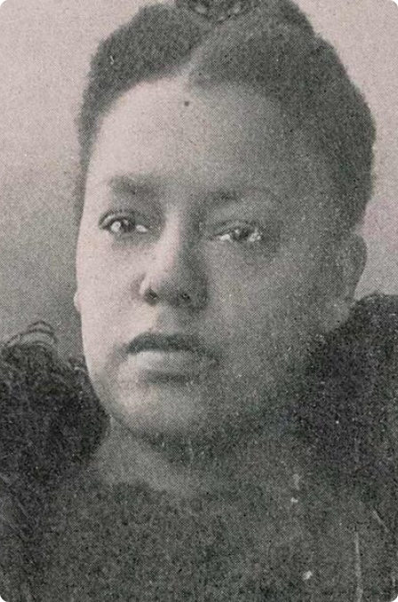

Paths to Power


Concord Baptist Church

Alice W. Wiley Seay, 1958 - 1937

Get in touch with the organization that contributed stories and archival information to this page! This organization can be reached at email@gmail.com.

Alice W. Wiley Seay (1858–1937) was a prominent community leader and activist associated with Concord
Baptist Church in Brooklyn. She founded the Empire State Federation of Women’s Clubs in 1908, uniting
Black women's organizations across New York to tackle issues such as education, civil rights, and
social upliftment. Her leadership extended to the establishment of the Brooklyn NAACP Chapter, where she
worked to combat systemic racism and advocate for equal opportunities for African Americans.
Alice’s pioneering efforts laid the groundwork for many future leaders, including Shirley Chisholm, who
was also affiliated with the NAACP.